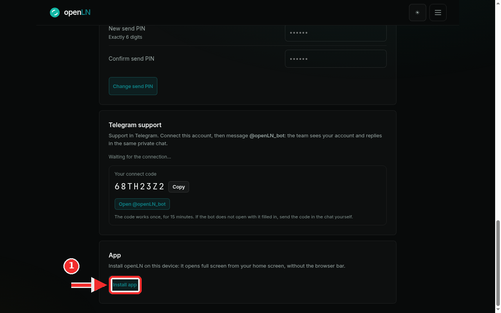

How to install openLN on your phone
openLN installs like an app. There is no app store involved and nothing to download: your browser saves openLN next to your other apps, the icon appears on your home screen, and from then on openLN opens in full screen, without the browser bar. This kind of install is called a progressive web app, or PWA. It is optional; the same openLN also runs in an ordinary browser tab, and the two share one account. It takes under a minute.
- You are signed in to your openLN account on the device where you want the app, or you have your handle and password ready to sign in.
- You have openln.com/app open in the browser on that device.
- On an iPhone or iPad, use Safari: the Add to Home Screen option lives there.
Open the App card and press Install app
Open the menu and tap Settings. Scroll to the App card, which reads "Install openLN on this device: it opens full screen from your home screen, without the browser bar." On Chrome or Edge, on an Android phone or a desktop computer, the card shows one button: Install app. Press it, accept the confirmation the browser shows, and the openLN icon lands on your home screen (or in your dock) a moment later. The card then reads Installed. openLN opens full screen from this device.
On an iPhone or iPad you install from Safari: open openln.com/app in Safari, tap the Share button, scroll the list and choose Add to Home Screen, then confirm. Safari puts the openLN icon on your home screen. If your browser does not show an Install app button, it keeps the install in its menu instead: open the browser menu and choose Install app (some browsers call it Add to Home Screen). The result is the same.

- Installed means full screen. The home-screen icon opens openLN directly at openln.com/app, without the address bar or browser tabs around it.
- The app and the browser are the same account. Sign in with the same handle and password, and everything is where you left it: wallets, rates, books and device settings. Nothing has to be set up twice. openLN never takes custody of your sats.
- The Install app button is not always there. It appears only when the browser offers its own install prompt (Chrome and Edge). When it is missing, use the browser menu as above; nothing is broken.
- It works offline too. If the network drops, the installed app shows its own openLN page with a Try again button instead of the browser's error screen.